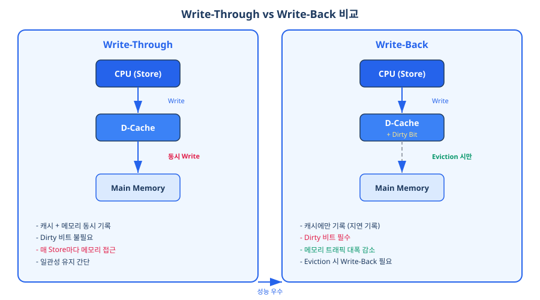
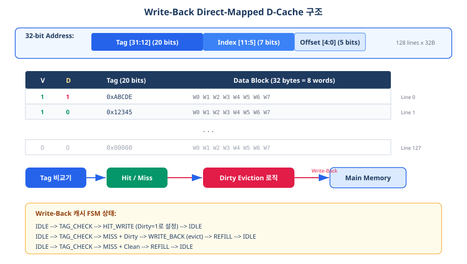
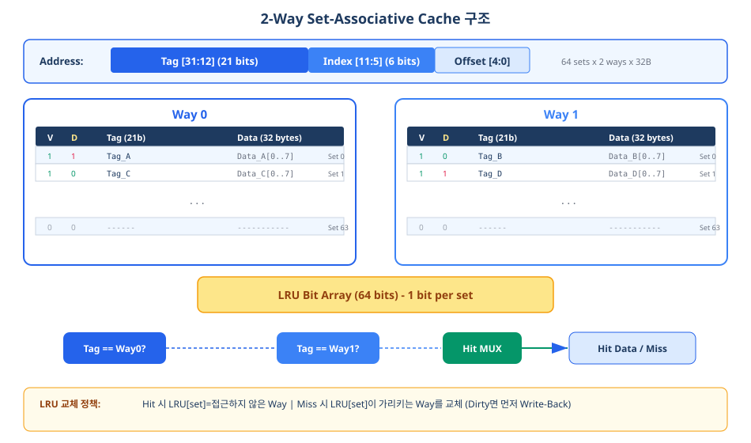
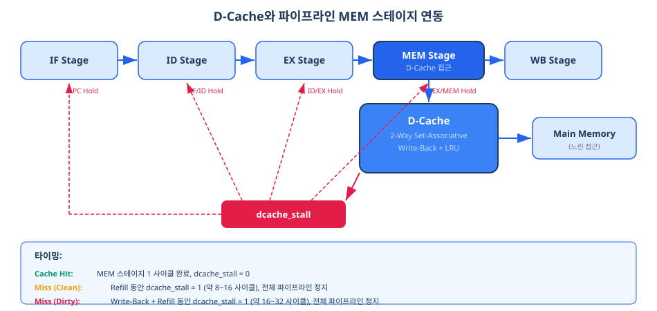
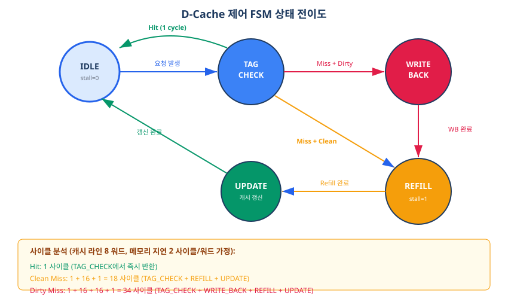
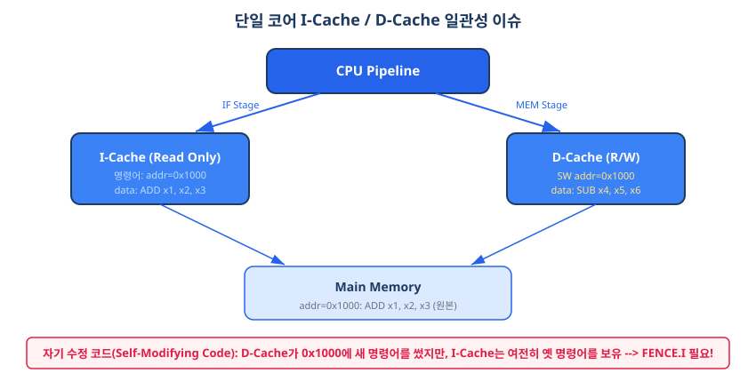

Chapter 13에서 설계한 L1 명령어 캐시(I-Cache)는 읽기 전용이었기에 비교적 단순하였습니다. 그러나 데이터 캐시(D-Cache)는 Load뿐 아니라 Store 명령어도 처리해야 하므로, "쓰기를 어떻게 처리할 것인가"라는 근본적인 설계 질문이 추가됩니다. 이 챕터에서는 Write-Through와 Write-Back 정책을 비교하고, Dirty 비트 기반 Write-Back 캐시를 설계하며, 2-Way 세트 연관(Set-Associative) 구조와 LRU 교체 정책까지 구현합니다. 최종적으로 D-Cache를 파이프라인 MEM 스테이지에 연동하여 dcache_stall 신호로 파이프라인을 제어하는 방법을 학습합니다.
Chapter 13에서 우리는 L1 명령어 캐시(I-Cache)를 설계하였습니다. I-Cache는 프로세서가 실행할 명령어를 저장하는 읽기 전용 캐시였습니다. 프로그램 코드는 실행 중에 변경되지 않으므로, I-Cache는 히트(Hit) 시 데이터를 즉시 반환하고 미스(Miss) 시 하위 메모리에서 캐시 라인을 채우면 되었습니다. 쓰기에 대한 고려가 전혀 필요 없었던 것입니다.
그러나 데이터 캐시(Data Cache, D-Cache)는 상황이 근본적으로 다릅니다. RV32I 프로세서의 MEM 스테이지에서는 Load 명령어(LW, LH, LB 등)로 데이터를 읽을 뿐 아니라, Store 명령어(SW, SH, SB)로 데이터를 쓰기도 합니다. 캐시에 데이터를 쓸 때, 하위 메모리(Main Memory)와의 일관성을 어떻게 유지할 것인지가 D-Cache 설계의 핵심 과제입니다.
Write-Through(즉시 기록) 정책은 가장 직관적인 방법입니다. CPU가 Store 명령어를 실행하면, 캐시와 하위 메모리에 동시에 데이터를 기록합니다. 이 방식의 최대 장점은 일관성 보장이 간단하다는 점입니다. 캐시와 메모리의 내용이 항상 동일하므로, 캐시 라인을 교체(Eviction)할 때 별도의 기록 작업이 필요 없습니다.
그러나 치명적인 단점이 있습니다. 매 Store 명령어마다 느린 하위 메모리에 접근해야 합니다. 프로그램에서 Store 명령어가 빈번하게 실행되면(예: 배열 초기화, 스택 프레임 생성), 메모리 트래픽이 급증하여 성능이 크게 저하됩니다. 이를 완화하기 위해 쓰기 버퍼(Write Buffer)를 도입할 수 있지만, 근본적인 트래픽 문제는 해결되지 않습니다.
Write-Back(지연 기록) 정책은 Store 명령어 실행 시 캐시에만 데이터를 기록하고, 하위 메모리 기록은 나중으로 미루는 방식입니다. 대신, 수정된 캐시 라인에 Dirty 비트(Dirty Bit)라는 1비트 플래그를 설정하여 "이 라인은 메모리와 내용이 다르다"는 사실을 기록합니다.
하위 메모리에 실제로 기록하는 시점은 해당 캐시 라인이 교체(Eviction)될 때입니다. 새로운 데이터로 캐시 라인을 채우기 전에, 기존 라인의 Dirty 비트가 설정되어 있으면 먼저 하위 메모리에 기록(Write-Back)한 후 새 데이터를 채웁니다. Dirty 비트가 0이면(Clean 라인) 바로 새 데이터를 덮어쓸 수 있습니다.

아래 표는 두 정책의 핵심 특성을 비교합니다.
| 항목 | Write-Through | Write-Back |
|---|---|---|
| 쓰기 지연 | 매 Store마다 메모리 접근 (느림) | 캐시에만 기록 (빠름, 1사이클) |
| 메모리 트래픽 | 높음 (Store 빈도에 비례) | 낮음 (Eviction 시에만) |
| 일관성 유지 | 간단 (항상 동기화) | 복잡 (Dirty 비트 관리 필요) |
| Dirty 비트 | 불필요 | 필수 (라인당 1비트) |
| Eviction 비용 | 0 (바로 덮어쓰기) | Dirty 시 Write-Back 필요 |
| 구현 복잡도 | 낮음 | 중간 (FSM 상태 추가) |
| 실무 채택 | L1 일부, 임베디드 | 대부분의 고성능 L1/L2 캐시 |
우리 교재에서는 Write-Back 정책을 채택합니다. 그 이유는 세 가지입니다. 첫째, 현대 프로세서의 대다수가 L1 D-Cache에 Write-Back을 사용하므로 실무와 가까운 설계 경험을 제공합니다. 둘째, Basys 3 보드에서 외부 메모리 접근은 여러 사이클이 소요되므로 메모리 트래픽을 줄이는 것이 성능에 유리합니다. 셋째, Dirty 비트와 Eviction 로직을 구현하는 것 자체가 캐시 설계의 핵심 역량이므로 교육적 가치가 높습니다.
14.1절에서 Write-Back 정책의 원리와 장점을 이해하였습니다. 이제 이를 실제 하드웨어로 구현합니다. 이 절에서는 먼저 직접 매핑(Direct-Mapped) 구조의 Write-Back D-Cache를 설계합니다. Chapter 13의 I-Cache와 비교하여, Dirty 비트와 Eviction 로직이 추가되는 과정을 단계적으로 살펴보겠습니다.
Chapter 13에서 설계한 직접 매핑 I-Cache의 구조를 떠올려 봅시다. 각 캐시 라인은 Valid 비트, Tag, Data 블록으로 구성되어 있었습니다. D-Cache에서는 여기에 Dirty 비트 1비트가 추가됩니다.
| 필드 | I-Cache (Ch13) | D-Cache (Ch14) | 설명 |
|---|---|---|---|
| Valid | 1비트 | 1비트 | 라인이 유효한지 표시 |
| Dirty | 없음 | 1비트 | 메모리와 다른 데이터 보유 여부 |
| Tag | 20비트 | 20비트 | 주소 상위 비트 (라인 식별) |
| Data Block | 32바이트 | 32바이트 | 8 워드 (256비트) |
Dirty 비트의 동작 규칙은 간단합니다. 캐시 라인에 Store가 수행되면 Dirty = 1로 설정합니다. 메모리에서 새로 Refill된 라인은 Dirty = 0(Clean)입니다. Eviction 시 Dirty = 1이면 메모리에 Write-Back하고, Dirty = 0이면 그냥 버립니다.

Write-Back D-Cache는 미스 처리 과정이 I-Cache보다 복잡합니다. 미스 발생 시 교체 대상 라인이 Dirty인지 확인하고, Dirty이면 먼저 메모리에 기록한 후 새 데이터를 채워야 합니다. 이 다단계 처리를 체계적으로 관리하기 위해 유한 상태 기계(FSM)를 사용합니다.
D-Cache FSM은 다섯 가지 상태를 가집니다.
| 상태 | 동작 | stall 출력 |
|---|---|---|
S_IDLE |
CPU 요청 대기 | 0 |
S_TAG_CHECK |
Tag 비교, Hit/Miss 판정 | Hit 시 0, Miss 시 1 |
S_WRITE_BACK |
Dirty 라인을 메모리에 기록 (8 워드 전송) | 1 |
S_REFILL |
메모리에서 새 캐시 라인 읽기 (8 워드 전송) | 1 |
S_UPDATE |
Tag/Valid/Dirty 갱신, IDLE 복귀 | 1 (다음 사이클에 0) |
상태 전이는 세 가지 경로로 나뉩니다.
아래는 직접 매핑 Write-Back D-Cache의 핵심 구현입니다. 128 라인 × 32바이트/라인 = 4KB 용량으로, Basys 3 BRAM 자원으로 충분히 구현 가능합니다.
module dcache_direct_mapped_wb #(
parameter ADDR_WIDTH = 32,
parameter CACHE_LINES = 128, // 128 라인
parameter BLOCK_WORDS = 8, // 라인당 8 워드 (32바이트)
parameter INDEX_WIDTH = $clog2(CACHE_LINES), // 7비트
parameter OFFSET_WIDTH = $clog2(BLOCK_WORDS) + 2, // 5비트
parameter TAG_WIDTH = ADDR_WIDTH - INDEX_WIDTH - OFFSET_WIDTH
)(
input logic clk,
input logic rst_n,
// CPU 인터페이스
input logic cpu_req_i,
input logic cpu_write_i,
input logic [ADDR_WIDTH-1:0] cpu_addr_i,
input logic [31:0] cpu_wdata_i,
input logic [3:0] cpu_byte_en_i,
output logic [31:0] cpu_rdata_o,
output logic dcache_stall_o,
// 메모리 인터페이스
output logic mem_req_o,
output logic mem_write_o,
output logic [ADDR_WIDTH-1:0] mem_addr_o,
output logic [31:0] mem_wdata_o,
input logic [31:0] mem_rdata_i,
input logic mem_ready_i
);
// 주소 필드 분해
logic [TAG_WIDTH-1:0] addr_tag;
logic [INDEX_WIDTH-1:0] addr_index;
logic [2:0] addr_word_offset;
assign addr_tag = cpu_addr_i[31:12];
assign addr_index = cpu_addr_i[11:5];
assign addr_word_offset = cpu_addr_i[4:2];
// 캐시 저장소
logic valid_array [0:CACHE_LINES-1];
logic dirty_array [0:CACHE_LINES-1]; // ★ Dirty 비트
logic [TAG_WIDTH-1:0] tag_array [0:CACHE_LINES-1];
logic [31:0] data_array [0:CACHE_LINES-1][0:BLOCK_WORDS-1];
// 히트/미스 판정
logic cache_hit, cache_dirty;
assign cache_hit = valid_array[addr_index] &&
(tag_array[addr_index] == addr_tag);
assign cache_dirty = valid_array[addr_index] &&
dirty_array[addr_index];
// FSM 상태 정의
typedef enum logic [2:0] {
S_IDLE, S_TAG_CHECK, S_WRITE_BACK, S_REFILL, S_UPDATE
} state_t;
state_t state, next_state;
// ... (전체 코드는 code_examples/ch14_dcache_direct_mapped_wb.sv 참조)
endmodule
코드 분석 포인트:
1. Dirty 비트 배열: dirty_array는 각 캐시 라인의 수정 여부를 추적합니다. Store 히트 시 해당 라인의 Dirty 비트를 1로 설정하고, Refill 후에는 0으로 초기화합니다. 이 1비트가 Write-Back 캐시의 핵심입니다.
2. 바이트 인에이블: cpu_byte_en_i는 SB(1바이트), SH(2바이트), SW(4바이트) 명령어에 따라 캐시 라인의 특정 바이트만 수정할 수 있게 합니다. 전체 워드가 아닌 부분 쓰기를 지원하는 것은 실무에서 필수적입니다.
3. Eviction 주소 생성: Write-Back 시 메모리 주소는 기존 Tag + 현재 Index + 워드 카운터로 조합됩니다. 새로 요청된 주소의 Tag가 아니라 교체되는 라인의 Tag를 사용해야 하는 점에 주의하십시오. 이것은 초보자가 가장 자주 실수하는 부분입니다.
14.2절의 직접 매핑 캐시는 구현이 단순하지만, 치명적인 약점이 있습니다. 같은 인덱스에 매핑되는 두 주소가 번갈아 접근되면, 매번 캐시 미스가 발생하는 충돌 미스(Conflict Miss)가 일어납니다. 예를 들어, 주소 A와 주소 B가 같은 캐시 라인 인덱스를 갖는다면, A를 접근할 때 B를 교체하고, B를 접근할 때 A를 교체하는 무한 반복(핑퐁 현상)이 발생합니다.
2-Way 세트 연관 캐시에서는 하나의 세트(Set)에 2개의 Way가 존재합니다. 동일 인덱스를 갖는 두 개의 서로 다른 Tag가 동시에 캐시에 저장될 수 있으므로, 충돌 미스가 크게 줄어듭니다.
구조 파라미터를 정리합니다.
| 파라미터 | 직접 매핑 (14.2절) | 2-Way 세트 연관 (14.3절) |
|---|---|---|
| 총 용량 | 4KB (128 라인 × 32B) | 4KB (64 세트 × 2 Way × 32B) |
| 세트 수 | 128 | 64 |
| Way 수 | 1 | 2 |
| Index 비트 | 7비트 [11:5] | 6비트 [10:5] |
| Tag 비트 | 20비트 [31:12] | 21비트 [31:11] |
| Offset 비트 | 5비트 [4:0] | 5비트 [4:0] |
| Tag 비교기 | 1개 | 2개 (병렬) |
총 용량이 동일한 4KB임을 주목하십시오. 세트 수가 반으로 줄었지만 Way가 2개이므로 전체 저장 용량은 같습니다. 대신 Index 비트가 1비트 줄고 Tag 비트가 1비트 늘어, 각 Way마다 21비트 Tag 비교기가 필요합니다. 하드웨어 비용(비교기 2개)이 증가하지만, 충돌 미스 감소로 히트율이 향상되는 것이 세트 연관 캐시의 핵심 트레이드오프입니다.

2-Way 캐시에서는 두 개의 Tag 비교기가 병렬로 동작합니다. Way 0의 Tag와 Way 1의 Tag를 동시에 비교하여, 둘 중 하나라도 일치하면 히트입니다. SystemVerilog로 표현하면 다음과 같습니다.
// 히트/미스 판정 (2-Way 병렬 비교)
logic hit_way0, hit_way1;
logic cache_hit;
logic hit_way_sel; // 히트된 Way 선택
assign hit_way0 = valid_array[0][addr_index] &&
(tag_array[0][addr_index] == addr_tag);
assign hit_way1 = valid_array[1][addr_index] &&
(tag_array[1][addr_index] == addr_tag);
assign cache_hit = hit_way0 || hit_way1;
assign hit_way_sel = hit_way1; // Way1 히트이면 1, Way0 히트이면 0
hit_way_sel은 히트된 Way를 가리키는 인덱스로, 데이터를 읽거나 쓸 Way를 선택하는 데 사용됩니다. 두 Way 모두 미스이면 cache_hit이 0이 되어 미스 처리 FSM이 동작합니다.
미스 발생 시 2개의 Way 중 어느 쪽을 교체할 것인가를 결정해야 합니다. 가장 널리 사용되는 정책이 LRU(Least Recently Used, 최소 최근 사용)입니다. "가장 오래전에 접근된 Way를 교체한다"는 원칙으로, 시간적 지역성(Temporal Locality)의 원리에 근거합니다.
2-Way의 경우, LRU 구현이 매우 간단합니다. 세트당 1비트만 있으면 됩니다. 이 비트는 "어느 Way가 LRU인가"를 가리킵니다.
// LRU 비트: 세트당 1비트 (0=Way0이 LRU, 1=Way1이 LRU)
logic lru_array [0:NUM_SETS-1];
// 교체 대상 Way 결정
logic replace_way_sel;
assign replace_way_sel = lru_array[addr_index];
// LRU 갱신 (히트 시)
always_ff @(posedge clk) begin
if (cache_hit)
lru_array[addr_index] <= hit_way_sel ? 1'b0 : 1'b1;
end
14.2절의 직접 매핑 캐시를 2-Way로 확장한 전체 코드는 code_examples/ch14_dcache_2way_wb.sv에 수록하였습니다. 핵심 변경 사항은 다음 네 가지입니다.
valid_array, dirty_array, tag_array, data_array 모두 Way 차원이 추가됩니다.캐시 모듈 자체를 설계하였으니, 이제 이를 5단계 파이프라인 프로세서의 MEM 스테이지에 연결해야 합니다. Chapter 13에서 I-Cache를 IF 스테이지에 연결하고 icache_stall 신호로 파이프라인을 제어하였습니다. D-Cache도 동일한 원리로 dcache_stall 신호를 생성하여 파이프라인을 제어합니다.
MEM 스테이지에서 D-Cache가 접근되는 경우는 두 가지입니다.
Load/Store가 아닌 명령어(ALU 연산, 분기 등)는 D-Cache에 접근하지 않으므로 cpu_req_i = 0입니다.
D-Cache에서 히트가 발생하면 1사이클 내에 데이터가 반환되므로, 파이프라인은 정상적으로 진행됩니다. 그러나 미스가 발생하면 메모리에서 캐시 라인을 채우는 동안(수십 사이클) 파이프라인 전체를 정지시켜야 합니다.
dcache_stall 신호가 활성화(1)되면 다음 동작이 수행됩니다.
즉, 전체 파이프라인이 동결(Freeze)됩니다. I-Cache 스톨과의 차이점은, I-Cache 스톨은 IF 단계에서만 발생하지만, D-Cache 스톨은 MEM 단계에서 발생하여 모든 스테이지를 멈춘다는 점입니다.

Chapter 10~12에서 설계한 파이프라인 제어 로직에 D-Cache 스톨을 통합합니다. 기존의 stall 신호(Load-Use 해저드)와 flush 신호(분기 예측 실패)에 dcache_stall을 추가해야 합니다.
// 파이프라인 제어 신호 통합
// 기존 Load-Use 스톨 + I-Cache 스톨 + D-Cache 스톨
logic pipeline_stall;
assign pipeline_stall = load_use_stall ||
icache_stall ||
dcache_stall;
// PC 제어
always_ff @(posedge clk or negedge rst_n) begin
if (!rst_n)
pc <= 32'h0000_0000;
else if (!pipeline_stall) begin
if (branch_taken)
pc <= branch_target;
else
pc <= pc + 32'd4;
end
// pipeline_stall이면 pc 유지 (암묵적)
end
// 파이프라인 레지스터 제어 (IF/ID 예시)
always_ff @(posedge clk or negedge rst_n) begin
if (!rst_n)
if_id_reg <= '0;
else if (flush_if_id)
if_id_reg <= '0; // Flush 우선
else if (!pipeline_stall)
if_id_reg <= if_id_next; // 정상 진행
// pipeline_stall이면 유지 (암묵적)
end
I-Cache 스톨과 D-Cache 스톨이 동시에 발생할 수 있는가요? 이론적으로는 가능합니다. IF 단계의 명령어 인출이 I-Cache 미스를 유발하는 동시에, MEM 단계의 Load/Store가 D-Cache 미스를 유발하는 상황입니다. 이 경우 두 스톨을 OR 조합하면 자연스럽게 처리됩니다. 두 캐시 모두 미스를 해결할 때까지 파이프라인은 정지 상태를 유지하며, 먼저 해결된 캐시부터 다음 동작이 가능해집니다.
D-Cache 스톨이 프로세서 성능에 미치는 영향을 정량적으로 분석해 봅시다. 이상적인 5단계 파이프라인의 CPI(Cycles Per Instruction)는 1.0입니다. 캐시 미스에 의한 CPI 증가분은 다음과 같이 계산됩니다.
CPI = 1.0 + (Load/Store 빈도) × (D-Cache 미스율) × (미스 페널티)
예를 들어, Load/Store 빈도가 30%, D-Cache 미스율이 5%, Clean Miss 페널티가 18사이클이라면:
CPI = 1.0 + 0.30 × 0.05 × 18 = 1.0 + 0.27 = 1.27
5%의 미스율이 CPI를 27% 증가시킵니다. Dirty Miss의 비율이 높아지면 페널티가 34사이클로 증가하여 성능 저하가 더 심해집니다. 이것이 캐시 히트율 최적화가 프로세서 성능에 결정적인 이유입니다.
설계가 완료되었으니 검증으로 넘어갑니다. 캐시 설계에서 검증은 특히 중요합니다. 왜냐하면 캐시 버그는 간헐적으로 발생하여 디버깅이 매우 어렵기 때문입니다. 정상적으로 보이는 프로그램이 특정 메모리 접근 패턴에서만 오동작하는 증상은, 대부분 캐시 제어 로직의 미묘한 오류에서 비롯됩니다.
D-Cache 테스트벤치는 다음 여섯 가지 핵심 시나리오를 반드시 검증해야 합니다.
| # | 시나리오 | 검증 포인트 |
|---|---|---|
| 1 | Cold Miss (첫 접근) | 빈 캐시에서 Refill 동작, Valid 비트 설정 |
| 2 | Cache Hit (재접근) | Tag 매칭, 1사이클 응답, stall=0 |
| 3 | Write Hit | Dirty 비트 설정, 데이터 갱신, Read-Back 확인 |
| 4 | Clean Miss (같은 세트, 다른 Way) | Way 1 할당, LRU 갱신 |
| 5 | Dirty Eviction | LRU Way의 Write-Back, Refill, 메모리 검증 |
| 6 | 바이트 단위 쓰기 | byte_en에 따른 부분 쓰기, 나머지 바이트 보존 |
테스트벤치는 DUT(Design Under Test)인 dcache_2way_wb와 간이 메모리 모델(Fake Memory)로 구성됩니다. 간이 메모리는 설정 가능한 지연(Latency)을 시뮬레이션하여, 캐시 FSM이 메모리 응답을 올바르게 대기하는지 확인합니다.
// 간이 메모리 모델: MEM_LATENCY 사이클 지연 후 응답
localparam MEM_LATENCY = 2;
logic [31:0] main_memory [0:65535]; // 256KB
always_ff @(posedge clk or negedge rst_n) begin
if (!rst_n) begin
mem_ready <= 1'b0;
mem_delay_cnt <= 0;
end else if (mem_req) begin
if (mem_delay_cnt < MEM_LATENCY - 1) begin
mem_delay_cnt <= mem_delay_cnt + 1;
mem_ready <= 1'b0;
end else begin
mem_ready <= 1'b1;
mem_delay_cnt <= 0;
if (mem_write)
main_memory[mem_addr[17:2]] <= mem_wdata;
else
mem_rdata <= main_memory[mem_addr[17:2]];
end
end else begin
mem_ready <= 1'b0;
mem_delay_cnt <= 0;
end
end
시뮬레이션 파형에서 확인해야 할 핵심 신호와 기대 동작을 정리합니다.

시나리오 5 (Dirty Eviction) 파형 추적:
mem_write_o=1, word_cnt가 0~7까지 증가하며 8워드를 메모리에 기록. 이때 mem_addr_o는 기존 Tag의 주소임을 확인mem_write_o=0, word_cnt가 다시 0~7까지 증가하며 8워드를 메모리에서 읽기. 이때 mem_addr_o는 새 Tag의 주소dcache_stall=0 확인, 다음 파이프라인 사이클 진행전체 테스트벤치 코드는 code_examples/ch14_dcache_tb.sv에 수록하였습니다. 실행 방법은 다음과 같습니다.
# VCS 실행
vcs -sverilog ch14_dcache_2way_wb.sv ch14_dcache_tb.sv \
-o dcache_sim +vcs+vcdpluson
./dcache_sim
# Vivado Simulator 실행
xvlog --sv ch14_dcache_2way_wb.sv ch14_dcache_tb.sv
xelab dcache_tb -s dcache_sim
xsim dcache_sim --runall --wdb dcache_tb.wdb
테스트 통과 기준은 모든 시나리오에서 [PASS] 메시지가 출력되는 것입니다. 하나라도 [FAIL]이 있으면 해당 시나리오의 파형을 분석하여 원인을 찾아야 합니다.
지금까지 우리는 I-Cache(Ch13)와 D-Cache(Ch14)를 독립적으로 설계하였습니다. 두 캐시는 각각 IF 스테이지와 MEM 스테이지에 연결되어 독립적으로 동작합니다. 그런데 한 가지 미묘한 문제가 있습니다. 동일한 메모리 주소를 I-Cache와 D-Cache가 동시에 보유할 수 있으며, 두 캐시의 내용이 다를 수 있다는 점입니다.
이 문제가 실제로 발생하는 대표적인 사례는 자기 수정 코드(Self-Modifying Code)입니다. 프로그램이 Store 명령어로 명령어 영역의 메모리 주소에 새 값을 쓰는 경우를 생각해 봅시다.
이것이 캐시 일관성(Cache Coherence) 문제입니다. 단일 코어에서도 I-Cache와 D-Cache가 분리된 하버드 구조에서는 이 문제가 발생할 수 있습니다.

RISC-V ISA는 이 문제를 FENCE.I 명령어로 해결합니다. FENCE.I는 "명령어 캐시를 무효화(Invalidate)하라"는 의미입니다. 자기 수정 코드를 수행한 후 FENCE.I를 실행하면, I-Cache의 모든(또는 관련) 라인이 무효화되어 다음 명령어 인출 시 메모리에서 최신 데이터를 가져옵니다.
// RISC-V 어셈블리: 자기 수정 코드 패턴
sw x5, 0(x10) // x10이 가리키는 주소에 새 명령어 기록 (D-Cache)
fence.i // I-Cache 무효화
jalr x0, 0(x10) // 수정된 주소로 점프 → 새 명령어 실행
우리 설계에서 FENCE.I의 하드웨어 구현은 비교적 간단합니다. I-Cache의 모든 Valid 비트를 0으로 리셋하면 됩니다. 이후 IF 스테이지에서 명령어를 인출할 때 모든 접근이 미스가 되어, 메모리에서 최신 데이터를 다시 가져옵니다.
// FENCE.I 처리: I-Cache 전체 무효화
always_ff @(posedge clk or negedge rst_n) begin
if (!rst_n) begin
for (int i = 0; i < CACHE_LINES; i++)
icache_valid[i] <= 1'b0;
end else if (fence_i_execute) begin
// FENCE.I 명령어 감지 시 전체 무효화
for (int i = 0; i < CACHE_LINES; i++)
icache_valid[i] <= 1'b0;
end else if (/* 정상 Refill */) begin
// ...
end
end
단일 코어에서의 일관성 문제는 FENCE.I로 비교적 간단히 해결됩니다. 그러나 멀티코어(Multi-Core) 환경에서는 문제가 훨씬 복잡해집니다. 코어 A의 D-Cache가 수정한 데이터를, 코어 B의 D-Cache가 옛 데이터로 보유하고 있을 수 있기 때문입니다. 이를 해결하기 위해 MESI 프로토콜, 스누프(Snoop) 버스, 디렉토리 기반 프로토콜 등의 하드웨어 메커니즘이 필요합니다.
멀티코어 캐시 일관성에 대한 본격적인 논의는 Chapter 25 — 멀티코어와 캐시 일관성 기초에서 다룹니다. 현재 단계에서는 "단일 코어에서도 I-Cache와 D-Cache 간의 일관성 문제가 존재하며, FENCE.I로 해결한다"는 점만 기억하면 충분합니다.
이 챕터에서는 L1 데이터 캐시(D-Cache)의 설계를 완성하였습니다. Chapter 13의 읽기 전용 I-Cache에서 한 단계 나아가, 쓰기 처리라는 근본적인 설계 과제를 해결하는 과정을 다루었습니다.
0x0001_2345의 Tag, Index, Offset 값을 계산하시오.int A[4096]를 순차적으로 초기화할 때(4096회 SW 실행), 4KB Write-Through 캐시와 4KB Write-Back 캐시에서 각각 메모리 쓰기 트래픽(바이트 수)이 얼마인지 계산하시오. (힌트: Write-Back에서는 Eviction 횟수를 고려하시오.)